O Ponto de Encontro
Tem 6 garotas que voce pode se casar. Cada garota tem um coracao com cores que aparece no seio delas, deixando voce saber como elas se sentem com voce. A unica excecao e a Deusa, que tem um coracao invisivel. O Coracao vai mudar dependendo de como voce trata cada garota. As cores irao mudar comecando com um coracao negro, roxo, azul, verde, amarelo, laranja e finalmente o vermelho. Quando ela chega no coracao vermelho voce ja pode comprar a pena azul do mercadinho de Jeff para pedir a ela em casamento. Ha tambem eventos que ocorrem, chamados "Eventos do coracao", quando voce alcanca uma cor do coracao de cada garota. Se voce escolher seu aniversario do mesmo de uma garota, o aniversario dela vai cair numa data alternativa.
| 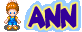 | >> | > |
| > | > | 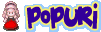 | >
Aldeoes da Cidade Mineral
Voce nao pode se casar com o resto dos aldeoes, mas ser legal com eles ainda e quase que obrigatorio. Quando voce e legal com os residentes eles ficam legais com voce. Alguns dos aldeoes irao te ensinar algumas receitas se voce foi legal com eles o bastante. Dando presentes das comidas favoritas deles e sempre um ponto a mais.
| 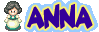 | 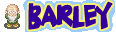 | ||
 |
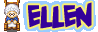 | ||
| 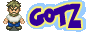 | 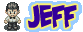 | ||
| 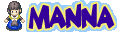 | 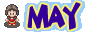 | 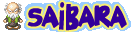 | |
| 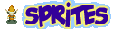 | |||
| 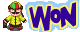 |
Rivais
As garotas disponiveis nao estao sozinhas! Voce tera que brigar pela relacao com outro cara da aldeia! Eles tem seus proprios eventos do coracao que ocorrem com as garotas e quando voce ver o quarto evento, eles irao se casar uma semana depois. Se voce e bom o bastante com o Rival eles te convidarao para o casamento deles. mesmo se voce nao for convidado, ha a chance de que voce pode acidentalmente encontre uma cerimonia na Igreja (No qual eu consegui com o casamento de Popuri e Kai).
Nota: Eu notei que na versao em ingles que o evento do coracao azul do rival pode acontecer mesmo se a garota nao esta no nivel de coracao azul. Tenha Cuidado!
Visitantes de "A Wonderful Life"
Quando voce conecta Friends of Mineral Town no Gamecube da edicao de A Wonderful Life, estas duas pessoas irao visitar sua cidade. Voce estara apto a comprar itens especiais de Van e Lu que te darao algumas receitas de cozinhas bacanas que os aldeoes da Cidade Mineral nao conhecem.
| 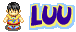 |